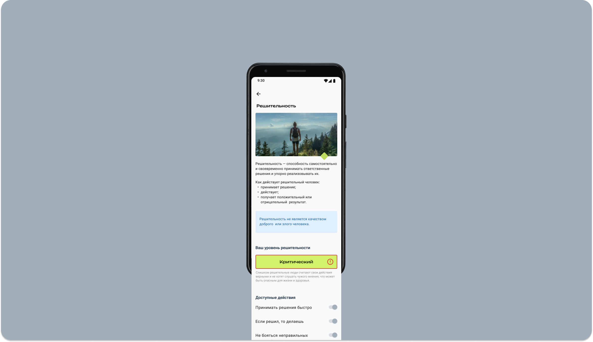

.png)
Ситуация
Саморост использует современные технологии для сканирования отпечатков пальцев и анализа информации, чтобы помочь людям лучше понять свой характер и, если нужно, внести изменения в отдельные черты.
Задача
Спроектировать интерфейс мобильного приложения, в котором можно:
- зарегистрироваться;
- оставить отпечаток пальцев и доп. информацию;
- узнать характеристики и изменить свой характер.
Важно, чтобы интерфейс был интуитивно понятным и привлекательным.
Проблемы
- Как отобразить пользователю результаты анализа, а также изменение характеристик характера, чтобы пользователь мог в полной мере понять, какие изменения произошли.
- Что делать если отпечатка пальца нет?
- Сколько черт характера знает пользователь и чем они отличаются между собой?
- С точки зрения общества есть позитивные и негативные черты характера, вместе с тем нужно избегать категоризации и стереотипов, а также предоставлять объективные данные и факты. Как быть?
- Как можно изменить характер?
Что было сделано
Анимация приветствия
Регистрация и авторизация по номеру телефона, как быстрый способ входа, плюс альтернативные способы входа. Вход в приложение через код без сложных паролей.
Минимум информации на первом этапе — имя, фамилия и дата рождения. Сервис имеет возрастное ограничение 18+ Далее отпечаток пальца, без него анализ характера будет неполным.
Анимация отпечатка пальца
Следующий этап — анкетирование. У пользователя есть выбор — поделиться информацией о себе или пропустить. В статус баре показываем, что всего несколько вопросов ждет пользователя. Информация нужна для более точного анализа.
Кнопку продолжить оставляем, чтобы избежать случайного нажатия.
Анимация выбора персонажа и любимой черты характера
На главной добавим элемент геймификации — покажем, кто из известных людей похож на пользователя. Предполагаю, что это может увеличить ретеншн.
Исследование
В ходе небольшого исследования об уровнях развития черты характера были опрошены четыре человека.
По его результатам выяснилось, что большинство респондентов выделяет два основных уровня черты характера — максимальный и нулевой. Большинство также выделило, что есть ситуации, когда черта характера слишком явная и из-за этого неприятна. Например, когда человек слишком агрессивен или нервозен.
Также в ходе исследования респондентами отмечалось, что иногда черта характера вроде присуща человеку, но в каких-то ситуациях она не проявляется. Вроде есть, а вроде нет. Два респондента отметили, что некоторые черты характера могут проявляться в незначительных ситуациях и не влиять на общую картину восприятия человека.
С учетом исследования решил выделить следующие уровни развития черты характера.
Страница черты характера. Небольшое описание и список действий, которые относятся к этой черте характера.
Если есть подписка на сервис, пользователь может изменить характер с помощью переключателей отдельных действий. Если нет подписки, переключатели неактивны и появится окно оплаты.
Результат
В ходе тестирования выяснилось следующее:
- По статус бару можно понять уровень развития черты характера, пользователи легко считывали его, но проблема возникла с изменением черты характера через действие. Этот момент нужно доработать.
- Два пользователя из трех прошли анкетирование и положительно оценили количество вопросов. Особенно понравился выбор персонажа.
- С конкретным действием, свойственным черте характера, возникла сложность. Если черта характера развита слабо, то пользователь легко может улучшить свою черту характера, но если черта прокачена критически максимально, то сложно выбрать от какого действия можно отказаться, чтобы уменьшить уровень. Этот момент нужно доработать.
- Описание черты характера и характерных действия позволили минимизировать ошибки при изменении характера.